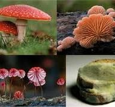
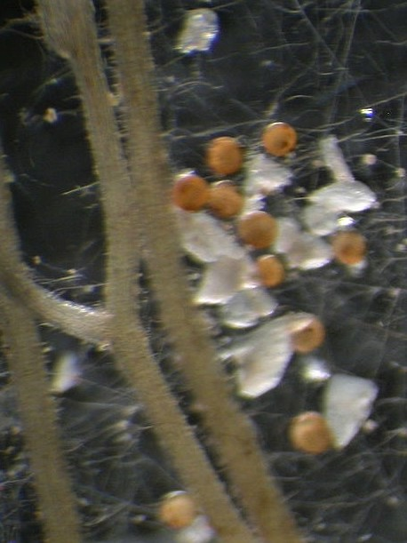

Reino Fungi
Características Gerais dos Fungos
Os fungos são organismos heterotróficos e eucariontes que podem ser unicelulares como as leveduras, ou multicelulares, caso da grande maioria das espécies. Essa grande maioria são os filamentosos, sendo esses filamentos denominados de hifas. Alguns fungos são formados por várias hifas densamente unidas, que formam o chamado micélio.
Os fungos vivem em praticamente todos os ambientes da Terra — do solo às rochas, da água aos tecidos de outros seres vivos — e desempenham funções essenciais, como a decomposição da matéria orgânica e a reciclagem de nutrientes. Além disso, muitos estabelecem relações simbióticas com plantas (como os fungos micorrízicos), animais ou algas (formando liquens), mostrando sua grande importância ecológica.
Principais Grupos de Fungos
Os fungos formam um reino extremamente diverso, presente em quase todos os ambientes do planeta. Para facilitar o estudo dessa diversidade, eles são tradicionalmente divididos em cinco grandes grupos, chamados de filos. Cada um tem suas próprias características e modos de vida — alguns vivem na água, outros no solo, e há os que se associam com plantas ou até com animais.
Chytridiomycota (Quitrídios)
.jpeg)
Os quitridiomicetos são um grupo mais primitivo de fungos, e sua principal característica é viver, na maior parte dos casos, em ambientes aquáticos ou muito úmidos. Diferente dos outros fungos, eles produzem esporos flagelados — ou seja, eles nadam!
Esses fungos são geralmente microscópicos e possuem parede celular de quitina, assim como os outros filos, mas ainda preservam traços de seus ancestrais unicelulares.
A maioria atua como decompositora de matéria orgânica, mas alguns são parasitas de algas, plantas e até animais, como o fungo Batrachochytrium dendrobatidis, que causa uma doença mortal em anfíbios, afetando populações de sapos e rãs no mundo todo.
Apesar de pequenos, os quitrídios têm grande importância evolutiva, pois mostram como os fungos podem ter se originado em ambientes aquáticos antes de conquistar o solo.
Ascomycota (Ascomicetos)
.jpg)
Os ascomicetos formam o maior grupo de fungos conhecidos, com espécies que vão de microscópicas leveduras a mofo colorido e até cogumelos comestíveis, como as trufas e morchelas.
Seu nome vem de uma estrutura chamada asco, um pequeno “saco” onde são formados os esporos reprodutivos. Apesar do tamanho minúsculo de muitos deles, os ascomicetos têm um impacto enorme no nosso dia a dia.
Entre os exemplos mais famosos estão:
- A levedura Saccharomyces cerevisiae, essencial na produção de pães, vinhos e cervejas;
- O fungo Penicillium, de onde foi isolada a penicilina, o primeiro antibiótico da história;
- E espécies responsáveis por mofos comuns em alimentos, como o queijo gorgonzola.
Os ascomicetos vivem em praticamente todos os ambientes e podem ser decompositores, simbiontes ou parasitas. Alguns causam doenças em plantas e animais, mas outros são verdadeiros aliados da ciência, da culinária e da medicina.
Zygomycota (zigomicetos)
.jpg)
Os zigomicetos são conhecidos por incluir os fungos que crescem no pão velho ou em frutas esquecidas na fruteira. O mais comum é o gênero Rhizopus, responsável pelo famoso “mofo do pão”.
Esses fungos são multicelulares e de crescimento rápido, formando hifas sem divisões internas (cenocíticas), o que lhes dá um aspecto de teia fina e contínua. Eles se reproduzem por meio de esporos resistentes, chamados zigósporos, capazes de sobreviver por longos períodos em condições difíceis — daí o nome do grupo.
Na natureza, atuam como decompositores, ajudando a transformar matéria orgânica morta em nutrientes que retornam ao solo. Embora simples, os zigomicetos são importantes ecologicamente e também cientificamente, pois ajudam a entender os estágios mais antigos da evolução dos fungos.
Basidiomycota (Basidiomicetos)
.jpg)
Os basidiomicetos são talvez o grupo mais reconhecido de fungos — afinal, é entre eles que estão os cogumelos que vemos a olho nu. Quando você pensa em um champignon, no cogumelo-do-sol, ou até no “cogumelo do Mario” dos jogos, está imaginando um representante desse grupo.
Esses fungos se destacam por formar estruturas reprodutivas visíveis, conhecidas como basidiocarpos — os corpos de frutificação. São esses “chapéus” coloridos que nascem em florestas, jardins e até troncos em decomposição. Dentro deles, há pequenas células chamadas basídios, onde são produzidos os esporos que garantem a reprodução e a dispersão da espécie.
A maior parte dos basidiomicetos é multicelular e filamentosa, com um extenso micélio subterrâneo que se alimenta de matéria orgânica em decomposição, como folhas e madeira. Esse trabalho silencioso é essencial para a reciclagem de nutrientes nos ecossistemas.
Além dos cogumelos comestíveis, esse filo inclui:
- Fungos de podridão branca e marrom, que degradam madeira;
- Fungos parasitas, como a ferrugem do café e o carvão do milho, que afetam plantações;
- E ainda as orelhas-de-pau, comuns em troncos e árvores vivas.
Em resumo, os basidiomicetos são os fungos que mais chamam atenção pela aparência, mas também estão entre os mais importantes para o equilíbrio ecológico — e, claro, para a culinária do mundo inteiro!
Glomeromycota
O quinto grupo de fungos ainda não apresentado se trata dos fungos do filo Glomeromycota que serão o principal alvo de pesquisa do nosso site. Eles são organismos microscópicos que vivem no solo e exercem um papel essencial nos ecossistemas terrestres. Eles pertencem ao Reino Fungi e se destacam por estabelecerem associações simbióticas com as raízes das plantas, conhecidas como micorrizas arbusculares.
Nessas associações, o fungo penetra nas raízes das plantas por meio de finos filamentos chamados hifas, formando estruturas ramificadas denominadas arbúsculos. Esses arbúsculos aumentam a área de contato entre o fungo e a planta, permitindo uma troca eficiente de nutrientes: o fungo ajuda a planta a absorver água e minerais (especialmente fósforo e nitrogênio), e em troca recebe açúcares produzidos na fotossíntese. É uma relação de mutualismo, onde ambos se beneficiam.
Todos os fungos do filo Glomeromycota são conhecidos como fungos micorrízicos arbusculares (FMAs). Isso significa que, dentro desse grupo, não existem formas de vida livre nem outros modos de nutrição — sua principal característica é justamente viver em simbiose com as plantas.
Esses fungos estão presentes em praticamente todos os tipos de solo e acredita-se que mais de 80% das espécies vegetais dependam dessa parceria para sobreviver e crescer. Pesquisas indicam ainda que essa relação simbiótica existe há mais de 400 milhões de anos, sendo fundamental para que as plantas pudessem colonizar o ambiente terrestre.
Por sua importância ecológica e antiguidade evolutiva, os glomeromicetos (FMAs) são considerados chaves na manutenção da vida no solo e na sustentabilidade dos ecossistemas.
A função e importância dos fungos FMAs na reestruturação e reparação de solos degradados:
Em solos degradados — como áreas afetadas por mineração, extração de argila ou desmatamento — a vida desaparece quase por completo. A perda da cobertura vegetal e da matéria orgânica faz com que o solo se torne compactado, pobre em nutrientes e sem estrutura para sustentar novas plantas. É nesse cenário que os fungos micorrízicos arbusculares (FMAs) desempenham um papel essencial na reconstrução da fertilidade e da estabilidade do solo.
Por viverem em simbiose com as raízes das plantas, esses fungos ajudam a restabelecer a troca de nutrientes e a formação de novas comunidades vegetais. As hifas dos FMAs se espalham pelo solo, conectando diferentes plantas e formando uma rede subterrânea que amplia a absorção de água e minerais, especialmente fósforo — um dos elementos mais limitantes em ambientes degradados.
Além disso, os FMAs produzem uma substância chamada glomalina, uma proteína que atua como um “cimento natural” do solo. Ela agrega as partículas, melhora a estrutura física, aumenta a retenção de água e reduz a erosão. Com o tempo, isso cria condições mais favoráveis para o crescimento de raízes e o estabelecimento de novas espécies vegetais.
Um exemplo prático desse efeito foi observado por Silva et al. (2012) em Campos dos Goytacazes (RJ), em uma área degradada pela extração de argila. Os pesquisadores compararam o solo revegetado com eucalipto (Eucalyptus camaldulensis) e acácia (Acacia mangium) e notaram que a revegetação aumentou a diversidade dos FMAs e elevou significativamente os níveis de glomalina e carbono orgânico.
Os melhores resultados foram obtidos quando as duas espécies foram plantadas juntas, o que favoreceu a formação das micorrizas e acelerou a recuperação do solo. Esses resultados mostram que os FMAs atuam como restauradores invisíveis dos ecossistemas. Eles transformam solos empobrecidos em ambientes novamente férteis, reconstroem as conexões entre as plantas e devolvem ao solo a capacidade de sustentar a vida. Em programas de reflorestamento e recuperação ambiental, a presença desses fungos é tão importante quanto o próprio plantio das árvores. FMAs é a sigla para Fungos Micorrízicos Arbusculares.
Por que conhecer essa classificação importa?
Cada grupo de fungos tem funções únicas no equilíbrio da natureza — alguns reciclam nutrientes, outros formam parcerias vitais com as plantas ou produzem substâncias úteis ao ser humano. Compreender essas diferenças é importante não apenas para estudar a biologia dos fungos, mas também para reconhecer como eles sustentam a vida nos ecossistemas e influenciam diretamente nosso dia a dia, seja no pão que comemos, na floresta que respiramos ou no solo onde tudo cresce.
Observação:
Vale lembrar que a classificação dos fungos está em constante revisão, especialmente com o avanço da biologia molecular. Algumas divisões tradicionais podem ter sido reorganizadas ou subdivididas em grupos mais específicos. É importante, sempre checar a cronologia das informações, principlamente em relação aos fungos do filo Glomeromycota, que atualmente foram impactados por divesas mudanças
Tabela Taxonômica – Filo Glomeromycota
| Nível | Nomes |
|---|---|
| Filo | Glomeromycota |
| Classes | Glomeromycetes, Archaeosporomycetes e Paraglomeromycetes |
| Ordens | Glomerales, Diversisporales, Gigasporales, Archaeosporales, Paraglomerales |
| Famílias | Glomeraceae, Claroideoglomeraceae, Entrophosporaceae, Diversisporaceae, Gigasporaceae, Acaulosporaceae, Pacisporaceae, Archaeosporaceae, Ambisporaceae, Geosiphonaceae, Paraglomeraceae |
| Gêneros | Glomus, Rhizophagus, Funneliformis, Septoglomus, Sclerocystis, Simiglomus, Claroideoglomus, Dominikia, Vesciculifurca, Entrophospora, Redeckera, Corymbiglomus, Diversispora, Otospora, Gigaspora, Scutellospora, Racocetra, Dentiscutata, Acaulospora, Kuklospora, Pacispora, Archaeospora, Intraspora, Ambispora, Geosiphon, Paraglomus |
Espécies do Filo Glomeromycota
| Espécie | Gênero | Família | Ordem | Classe | Habitat predominante | Descritor / Ano |
|---|---|---|---|---|---|---|
| Glomus mosseae | Glomus | Glomeraceae | Glomerales | Glomeromycetes | Solos agrícolas e florestais temperados | (T.H. Nicolson & Gerd.) Gerd. & Trappe, 1974 |
| Rhizophagus irregularis | Rhizophagus | Glomeraceae | Glomerales | Glomeromycetes | Solos de regiões temperadas e tropicais | (Błaszk., Wubet, Renker & Buscot) C. Walker & A. Schüßler, 2010 |
| Funneliformis geosporum | Funneliformis | Glomeraceae | Glomerales | Glomeromycetes | Solos arenosos e agrícolas | (T.H. Nicolson & Gerd.) C. Walker & A. Schüßler, 2010 |
| Claroideoglomus claroideum | Claroideoglomus | Claroideoglomeraceae | Glomerales | Glomeromycetes | Solos de florestas temperadas | (N.C. Schenck & G.S. Sm.) C. Walker & A. Schüßler, 2010 |
| Acaulospora scrobiculata | Acaulospora | Acaulosporaceae | Diversisporales | Glomeromycetes | Solos de regiões tropicais e subtropicais | Trappe, 1977 |
| Acaulospora laevis | Acaulospora | Acaulosporaceae | Diversisporales | Glomeromycetes | Solos ácidos de florestas e cerrados | Gerd. & Trappe, 1974 |
| Ambispora leptoticha | Ambispora | Ambisporaceae | Diversisporales | Glomeromycetes | Solos agrícolas e savanas | (Schenck & Smith) C. Walker, Vestberg & Schüßler, 2007 |
| Gigaspora margarita | Gigaspora | Gigasporaceae | Diversisporales | Glomeromycetes | Solos de florestas tropicais e savanas | Becker & Hall, 1976 |
| Scutellospora calospora | Scutellospora | Gigasporaceae | Diversisporales | Glomeromycetes | Solos arenosos e tropicais | (T.H. Nicolson & Gerd.) Walker & Sanders, 1986 |
| Diversispora epigaea | Diversispora | Diversisporaceae | Diversisporales | Glomeromycetes | Solos cultivados e pastagens | (T.H. Nicolson & Gerd.) C. Walker & Schüßler, 2010 |
| Cetraspora pellucida | Cetraspora | Gigasporaceae | Diversisporales | Glomeromycetes | Solos tropicais úmidos | (T.H. Nicolson & Gerd.) Oehl, 2008 |
| Entrophospora infrequens | Entrophospora | Entrophosporaceae | Diversisporales | Glomeromycetes | Solos agrícolas e gramíneas | Hall, 1977 |
| Paraglomus laccatum | Paraglomus | Paraglomeraceae | Paraglomerales | Paraglomeromycetes | Solos degradados e de cerrado | (Blaszk.) Morton & Redecker, 2001 |
| Paraglomus occultum | Paraglomus | Paraglomeraceae | Paraglomerales | Paraglomeromycetes | Solos de áreas áridas e tropicais | (Walker) Morton & Redecker, 2001 |
| Redeckera fulvum | Redeckera | Glomeraceae | Glomerales | Glomeromycetes | Solos de florestas e pradarias | (Błaszk., Wubet, Renker & Buscot) C. Walker & A. Schüßler, 2010 |
| Sclerocystis sinuosa | Sclerocystis | Glomeraceae | Glomerales | Glomeromycetes | Solos arenosos e secos | (Gerdemann & Trappe) Almeida & Schenck, 1990 |
| Septoglomus constrictum | Septoglomus | Glomeraceae | Glomerales | Glomeromycetes | Solos cultivados e tropicais | (Trappe) C. Walker, 2011 |
| Rhizoglomus intraradices | Rhizoglomus | Glomeraceae | Glomerales | Glomeromycetes | Solos agrícolas e rizosferas de plantas cultivadas | (Schenck & Smith) Sieverd., G.A. Silva & Oehl, 2014 |
| Acaulospora spinosa | Acaulospora | Acaulosporaceae | Diversisporales | Glomeromycetes | Solos tropicais e subtropicais | Walker & Trappe, 1981 |
| Gigaspora rosea | Gigaspora | Gigasporaceae | Diversisporales | Glomeromycetes | Solos de florestas úmidas e pastagens | T.H. Nicolson & Schenck, 1979 |